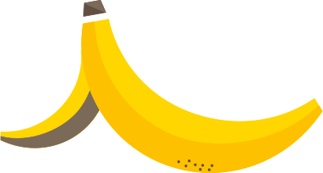
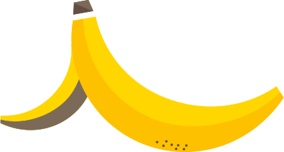

UPPHETTNINGEN HINDRAR SJUKDOMAR
Innan slurryn rötas hettas den upp till 70 grader i minst en timme. Det görs för att hindra att organismer som kan sprida sjukdomar förökar sig. Eftersom matavfallet även används som gödsel är detta viktigt. Därefter skickas slurryn till en syrefri rötningstank.
MIKROORGANISMERNA FROSSAR
I rötningstanken bubblar och jäser det. Mikroorganismerna frossar nu i matavfallet och pruttar biogas som innehåller metan. Nästan all energi i maten omvandlas till metan. Mikroorganismerna bildar mat åt varandra i en lång kedja där de som gör metan, metanogenerna, börjar jobba sist. De älskar ättikssyra, vätgas och koldioxid och behöver något av dessa ämnen för att kunna tillverka metan.
För att mikroorganismerna ska trivas måste temperaturen i rötningstanken vara jämn, annars kan de må dåligt, bli slöa eller dö. Det bildas nya mikroorganismer då men det kan ta längre tid för biogasen att bildas. Mikroorganismerna tycker heller inte om när det blir för surt i tanken utan trivs bäst när pH-värdet ligger på 7-8.
BIOGAS OCH RÖTREST
När mikroorganismerna ätit klart och matavfallet brutits ner, efter 25-40 dagar, har biogas bildats, det vill säga metan och koldioxid. Gasen kan också innehålla små mängder svavel och kväve. Innan biogasen kan användas som fordonsbränsle måste den förädlas. Det sker genom att koldioxiden tvättas bort med vatten under högt tryck. När biogasen torkats kan den fyllas i behållare och transporteras till biogasmacken.
Slurryn som är kvar kallas rötrest. Det är gödsel i flytande form som ser ut som svart vatten. Gödslet transporteras oftast till lantbrukarna med lastbil, i tankbilar eller containrar. Det kan också transporteras genom stora rör som grävs ner i marken.
GÖDSEL
Slurryn som genomgått rötning innehåller lika mycket näring som matavfallet hade från början. Skillnaden är att kvävet i matavfallet har blivit lättare för växterna att ta upp. Det är bra eftersom övergödningen av våra vatten som är ett stort miljöproblem då minskar.
När bonden gödslar sina grödor med rötresten är kretsloppet slutet – maten kan bli ny mat.
FORDONSGAS
Fordonsgas tillverkad av matavfall, som även kallas biometan, är det mest miljövänliga bränslet. Bilar anpassade för gasdrift kan tankas med både biometan och naturgas, men eftersom naturgas har fossilt ursprung klassas bilar som kör på naturgas inte alltid som miljöfordon.
När man använder biometan istället för bensin och diesel minskar utsläppen av partiklar, koldioxid, kolväten och kväveoxider – vår luft blir renare.
EL & FJÄRRVÄRME
Allt tas till vara vid biogastillverkning av matavfall. De brännbara resterna blir el och fjärrvärme. Egentligen skulle all biogas kunna användas för produktion av el, värme – eller kyla. De ställen som inte har en uppgraderingsanläggning av biogas till fordonsbränsle använder energin till olika saker.


 
